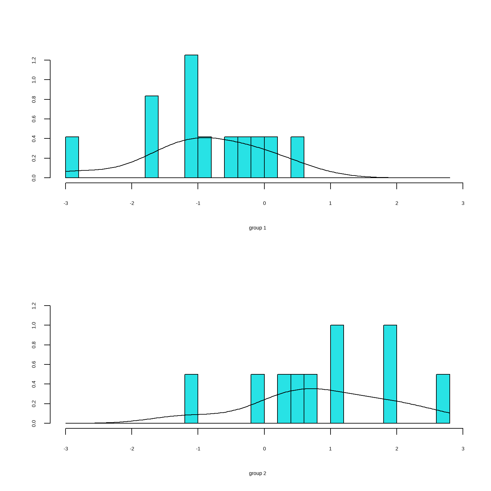
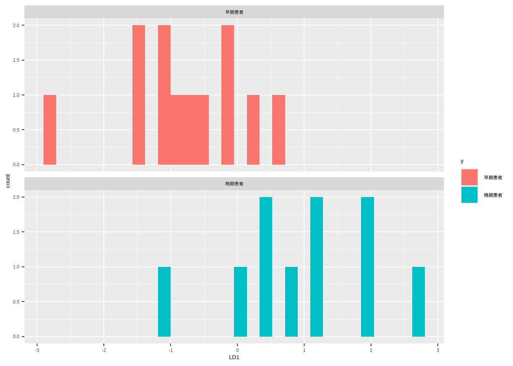
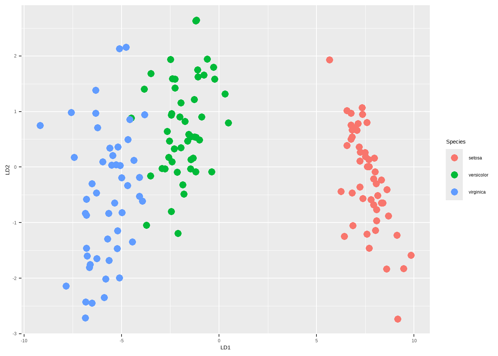
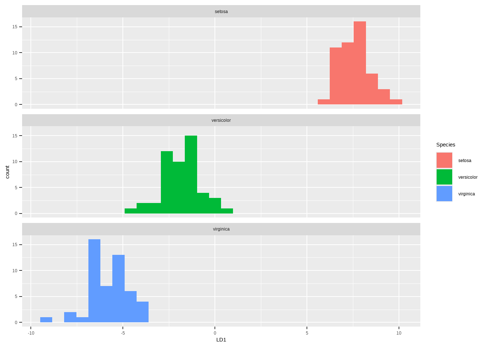

data20_1 <- read.csv("datasets/例20-1.csv")
head(data20_1)
## id x1 x2 x3 y
## 1 1 23 8 0 1
## 2 2 -1 9 -2 1
## 3 3 -10 5 0 1
## 4 4 -7 -2 1 1
## 5 5 -11 3 -4 1
## 6 6 -10 3 -1 126 判别分析
判别分析（discriminant-analysis）是根据判别对象若干个指标的观测结果判定其属于哪一类的统计方法。经典的判别分析方法有Fisher判别和贝叶斯判别分析。当分类很确定时，判别分析可以有效替代逻辑回归，但是如果自变量和因变量关系很复杂时，判别分析表现不如逻辑回归。
本章主要介绍线性判别、二次判别、贝叶斯判别。
26.1 Fisher判别
在R语言中进行Fisher判别分析（Fisher’s Discriminant Analysis），通常指的是线性判别分析（Linear Discriminant Analysis, LDA）。这主要是因为R中实现该算法的函数lda()源于历史命名习惯，它实际上就是基于Fisher的核心思想——寻找一个投影方向，使得类间方差最大而类内方差最小。
线性判别分析假设每个类中的观测服从多元正态分布，并且不同类别之间的协方差相等。适用于二分类数据和多分类数据。
使用孙振球版《医学统计学》第4版例20-1的数据。配套数据已上传到QQ群，需要的加群下载即可。
收集了22例肝硬化患者的3个指标，其中早期患者（用1表示）12例，晚期患者（用2表示），试做判别分析。
这个数据集中id是编号，x1,x2,x3是自变量，y是因变量。
线性判别分析可以通过MASS包中的lda函数实现：
library(MASS)
fit <- lda(y ~ x1+x2+x3, data = data20_1)
fit
## Call:
## lda(y ~ x1 + x2 + x3, data = data20_1)
##
## Prior probabilities of groups:
## 1 2
## 0.5454545 0.4545455
##
## Group means:
## x1 x2 x3
## 1 -3 4 -1
## 2 4 -5 1
##
## Coefficients of linear discriminants:
## LD1
## x1 0.0395150
## x2 -0.1265698
## x3 0.179263126.1.1 结果解读
Prior probabilities of groups是先验概率，是各类别在训练数据中的比例，类别1的概率是0.5454545，类别2是0.4545455。
Group means是每个类别在各个变量上的平均值。
最下面给出了线性判别系数，如果你的结果变量是3个类别，会给出两组判别系数，这里我的结果变量只有2分类，所以结果只有1组。
结果可以画出来：
plot(fit,type="both")
上图是判别分析结果的直方图和密度图，可以看出组间有重合，说明有些分组分错了。
下面用predict提取判别分析的分类结果。
predict用于判别分析可以得到3种类型的结果，class是类别，posterior是概率，x是线性判别评分。
pred <- predict(fit)$class # 提取判别结果
table(data20_1$y, pred) # 混淆矩阵
## pred
## 1 2
## 1 11 1
## 2 2 8可以看到有3个分类分错了，结果还是可以的，误判概率估计为：3/22≈0.136。
可以查看每个患者的后验概率：
# 查看概率
predict(fit)$posterior
## 1 2
## 1 0.62566758 0.374332416
## 2 0.95508370 0.044916302
## 3 0.89600449 0.103995511
## 4 0.51330556 0.486694443
## 5 0.95464457 0.045355435
## 6 0.88314148 0.116858515
## 7 0.77454260 0.225457398
## 8 0.99508599 0.004914013
## 9 0.89391137 0.106088634
## 10 0.84899794 0.151002059
## 11 0.31960372 0.680396284
## 12 0.64144092 0.358559076
## 13 0.14903037 0.850969632
## 14 0.57026493 0.429735074
## 15 0.13106732 0.868932682
## 16 0.26925350 0.730746503
## 17 0.03911397 0.960886034
## 18 0.04332382 0.956676176
## 19 0.01115243 0.988847571
## 20 0.35826933 0.641730670
## 21 0.90954200 0.090457999
## 22 0.37480490 0.625195100上面的图我们也可以用ggplot2画出来。
df.plot <- data.frame(LD1 = predict(fit)$x[,1],
y = factor(data20_1$y,labels = c("早期患者","晚期患者"))
)
library(ggplot2)
ggplot(df.plot, aes(x=LD1, fill=y))+
geom_histogram()+
facet_wrap(~ y, ncol = 1)
26.1.2 新数据预测
如果你想用这个模型预测新的数据，只需要predict(fit, newdata = xxx)即可。比如我们新建一个数据：
tmp <- data.frame(x1 = c(-9,-7,-9),
x2 = c(-18,-2,6),
x3 = c(3,3,1)
)
predict(fit, newdata = tmp)
## $class
## [1] 2 2 1
## Levels: 1 2
##
## $posterior
## 1 2
## 1 0.01736557 0.9826344
## 2 0.35826933 0.6417307
## 3 0.87974275 0.1202573
##
## $x
## LD1
## 1 2.4580167
## 2 0.5119296
## 3 -0.9381851这样就得到新的结果。
26.1.3 多分类
我们再用一个iris鸢尾花数据集演示下多分类线性判别分析。
library(MASS)
fit <- lda(Species ~ Sepal.Length + Sepal.Width + Petal.Length + Petal.Width,
data = iris)
fit
## Call:
## lda(Species ~ Sepal.Length + Sepal.Width + Petal.Length + Petal.Width,
## data = iris)
##
## Prior probabilities of groups:
## setosa versicolor virginica
## 0.3333333 0.3333333 0.3333333
##
## Group means:
## Sepal.Length Sepal.Width Petal.Length Petal.Width
## setosa 5.006 3.428 1.462 0.246
## versicolor 5.936 2.770 4.260 1.326
## virginica 6.588 2.974 5.552 2.026
##
## Coefficients of linear discriminants:
## LD1 LD2
## Sepal.Length 0.8293776 -0.02410215
## Sepal.Width 1.5344731 -2.16452123
## Petal.Length -2.2012117 0.93192121
## Petal.Width -2.8104603 -2.83918785
##
## Proportion of trace:
## LD1 LD2
## 0.9912 0.0088可视化结果：
iris$LD1 <- predict(fit)$x[,1]
iris$LD2 <- predict(fit)$x[,2]
library(ggplot2)
ggplot(iris, aes(LD1,LD2))+
geom_point(aes(color=Species),size=3)
ggplot(iris, aes(x=LD1, fill=Species))+
geom_histogram()+
facet_wrap(~ Species, ncol = 1)
26.2 二次判别
在R语言中，除了Fisher判别分析（即线性判别分析LDA），我们还可以使用二次判别分析（Quadratic Discriminant Analysis, QDA）。
两者的核心区别在于对协方差矩阵的假设：
- LDA (Fisher)：假设所有类别的协方差矩阵是相等的，因此决策边界是线性的。
- QDA：假设每个类别的协方差矩阵是独立的（不相等），因此决策边界是二次的（曲线），模型灵活性更高，但也更容易过拟合。
在R中，我们同样使用MASS包中的qda()函数来实现。下面简单演示一下：
fit <- qda(y ~ x1+x2+x3, data = data20_1)
fit
## Call:
## qda(y ~ x1 + x2 + x3, data = data20_1)
##
## Prior probabilities of groups:
## 1 2
## 0.5454545 0.4545455
##
## Group means:
## x1 x2 x3
## 1 -3 4 -1
## 2 4 -5 1结果不含判别系数，查看分类结果：
pred <- predict(fit)$class
table(data20_1$y, pred)
## pred
## 1 2
## 1 10 2
## 2 1 9也是3个分错了。
26.3 Bayes判别
贝叶斯判别也是根据概率大小进行判别，要求各类近似服从多元正态分布。当各类的协方差相等时，可得到线性贝叶斯判别函数，当各类的协方差不相等时，可得到二次贝叶斯判别函数。
在R语言中实现贝叶斯判别分析（Bayesian Discriminant Analysis），通常指的是基于贝叶斯统计理论的分类方法。根据数据特征和假设的不同，主要有两种实现路径：一种是基于朴素贝叶斯（Naive Bayes）的分类，另一种是基于多元正态分布假设的线性或二次判别分析（LDA/QDA，通常也被称为贝叶斯判别）。
孙振球《医学统计学》第4版例20-4：欲用4个标化后的影像学指标鉴别脑囊肿（1）、胶质瘤（2）、转移瘤（3），收集了17个病例，试建立判别贝叶斯函数。
data20_4 <- read.csv("datasets/例20-4.csv")
data20_4$y <- factor(data20_4$y)
head(data20_4)
## x1 x2 x3 x4 y
## 1 6.0 -11.5 19 90 1
## 2 -11.0 -18.5 25 -36 3
## 3 90.2 -17.0 17 3 2
## 4 -4.0 -15.0 13 54 1
## 5 0.0 -14.0 20 35 2
## 6 0.5 -11.5 19 37 3x1,x2,x3,x4是自变量，y是因变量。
使用klaR包实现朴素贝叶斯判别分析：
library(klaR)
fit <- NaiveBayes(y ~ ., data = data20_4)
fit
## $apriori
## grouping
## 1 2 3
## 0.4117647 0.2352941 0.3529412
##
## $tables
## $tables$x1
## [,1] [,2]
## 1 -14.42857 38.26163
## 2 0.80000 78.10779
## 3 -6.65000 19.78017
##
## $tables$x2
## [,1] [,2]
## 1 -17.34286 4.103599
## 2 -17.42500 3.085855
## 3 -17.33333 4.143268
##
## $tables$x3
## [,1] [,2]
## 1 12.71429 4.990467
## 2 17.50000 2.081666
## 3 20.16667 6.493587
##
## $tables$x4
## [,1] [,2]
## 1 31.14286 44.03948
## 2 0.00000 30.75711
## 3 -15.00000 35.83295
##
##
## $levels
## [1] "1" "2" "3"
##
## $call
## NaiveBayes.default(x = X, grouping = Y)
##
## $x
## x1 x2 x3 x4
## 1 6.0 -11.5 19 90
## 2 -11.0 -18.5 25 -36
## 3 90.2 -17.0 17 3
## 4 -4.0 -15.0 13 54
## 5 0.0 -14.0 20 35
## 6 0.5 -11.5 19 37
## 7 -10.0 -19.0 21 -42
## 8 0.0 -23.0 5 -35
## 9 20.0 -22.0 8 -20
## 10 -100.0 -21.4 7 -15
## 11 -100.0 -21.5 15 -40
## 12 13.0 -17.2 18 2
## 13 -5.0 -18.5 15 18
## 14 10.0 -18.0 14 50
## 15 -8.0 -14.0 16 56
## 16 0.6 -13.0 26 21
## 17 -40.0 -20.0 22 -50
##
## $usekernel
## [1] FALSE
##
## $varnames
## [1] "x1" "x2" "x3" "x4"
##
## attr(,"class")
## [1] "NaiveBayes"26.3.1 结果解读
$apriori：先验概率，这是你在进行判别之前，对各个类别的“初始认知”或“占比”。通常是由各类样本数除以总样本数得到的。
类别1占比约41.2%，类别2占比约23.5%，类别3占比约 35.3%。
$tables：这部分是贝叶斯判别中最关键的“似然”部分。该数据是连续型变量，且usekernel=FALSE（默认值，我没写在公式里），模型假设每个变量在每个类别下都服从正态分布。
因此，这里输出的不是频率，而是每个变量在每个类别下的正态分布参数：
- [,1]：对应正态分布的均值 (Mean)。
- [,2]：对应正态分布的标准差 (Standard Deviation, SD)。
以x1为例进行解释：
| 类别 | x1 的均值 (Mean) | x1 的标准差 (SD) | 含义 |
|---|---|---|---|
| 1 | -14.42857 | 38.26163 | 如果一个样本属于类别 1，那么它的 x1 特征值大概率在 -14.4 附近波动（波动范围约 ±38.3）。 |
| 2 | 0.80000 | 78.10779 | 如果一个样本属于类别 2，那么它的 x1 特征值大概率在 0.8 附近波动（波动范围很大，约 ±78.1）。 |
| 3 | -6.65000 | 19.78017 | 如果一个样本属于类别 3，那么它的 x1 特征值大概率在 -6.65 附近波动。 |
当有一个新样本（比如x1 = 5）进来时，模型会利用这组参数计算概率：
- P(x1=5 | 属于类别1)：利用均值=-14.4, 标准差=38.3 的正态分布公式计算。
- P(x1=5 | 属于类别2)：利用均值=0.8, 标准差=78.1 的正态分布公式计算。
- P(x1=5 | 属于类别3)：利用均值=-6.65, 标准差=19.8 的正态分布公式计算。
然后结合先验概率，算出后验概率，进行分类。
$usekernel：密度估计方法，这里是FALSE，说明没有使用核密度估计，因为使用了usekernel=FALSE。
$x：原始训练数据，这部分回显了你输入给模型的原始特征数据（x1到x4）。模型就是根据这些数字计算出上面的均值和标准差的。
$levels: [“1” “2” “3”]。说明模型识别出因变量（类别）有3个水平，分别是 “1”, “2”, “3”。
$varnames: [“x1” “x2” “x3” “x4”]。说明模型使用了这4个变量作为判别依据。
26.3.2 模型评价
获取预测结果，并查看混淆矩阵：
pred <- predict(fit)$class
table(pred, data20_4$y)
##
## pred 1 2 3
## 1 7 0 1
## 2 0 3 0
## 3 0 1 5只有两个分错了。
# 误判概率
2/17
## [1] 0.1176471如果要预测新的数据，只需要predict(fit, newdata = xxx)即可。
26.4 区别与联系
Fisher判别是一种思想（找最佳投影），贝叶斯判别是一种框架（基于概率），而线性判别(LDA) 和二次判别(QDA) 是具体的数学模型。
| 维度 | 概念 | 核心逻辑 | 备注 |
|---|---|---|---|
| 思想流派 | Fisher判别 (费歇判别) | 寻找一个投影方向，使得“类间差异最大化，类内差异最小化”。 | 注重几何直观，不假设数据分布。 |
| 思想流派 | 贝叶斯判别 | 基于贝叶斯定理，计算样本属于各类的概率，选概率最大的。 | 注重概率统计，通常假设数据服从正态分布。 |
| 模型形式 | 线性判别 (LDA) | 决策边界是一条直线（或超平面）。 | 当各类协方差相等时，Fisher和贝叶斯都会推导出LDA。 |
| 模型形式 | 二次判别 (QDA) | 决策边界是一个二次曲面（如抛物线）。 | 当各类协方差不等时使用。 |
- Fisher判别：我要把高维数据压扁到一条线上，只要压扁后两堆数据分得最开，这条线就是好线（线性边界）。
- 贝叶斯判别：我假设这两类数据都是正态分布，根据新病人的指标，算算他更可能来自哪一堆（根据参数不同，可能是线性或二次边界）。
- LDA (线性判别)：是Fisher思想的实现，也是贝叶斯框架下“假设两类变异程度一样”时的特例。
- QDA (二次判别)：是贝叶斯框架下“假设两类变异程度不一样”时的推论。
如果你假设数据服从多元正态分布，并且假设两类的协方差矩阵是相等的，那么用贝叶斯公式推导出来的最优分类边界，和Fisher的结果一模一样！